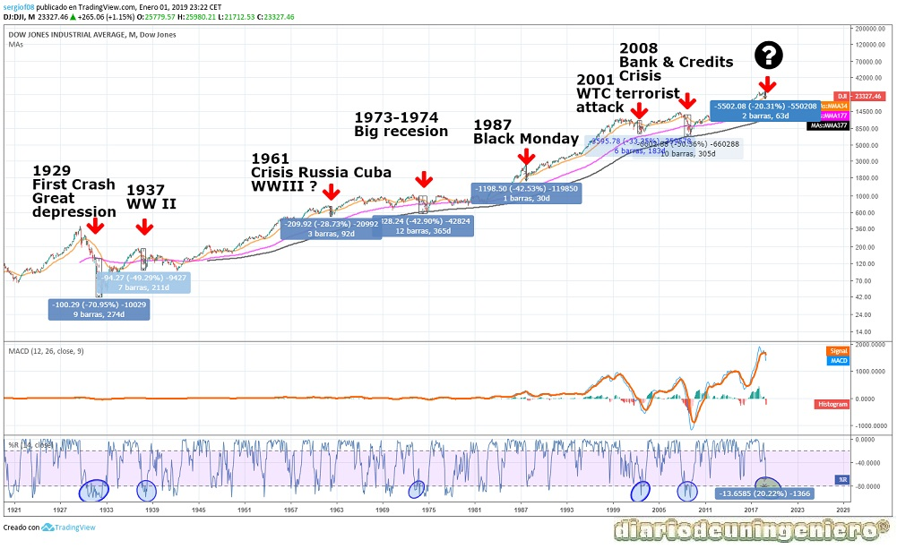

This year began with a very good footing with the commitment of a meeting between the two Koreas that would mark the beginning of the end of hostilities. This would reduce the tensions in the markets, because together with the commercial tensions with China would drag the American indices to the first significant decline since the big rise experienced since 2016. And is that in the face of the gradual and smooth rise after the recovery of The crisis of 2008 began to be an aggressive speculation due in part to confidence in the economy and employment and the beginning of interest rate hikes by the federal reserve.
So in February the Dow Jones for example would go back from 26,000 points to 23,000 points. A correction of almost 15% that would make the markets nervous. The ambiguity of Trump against tariffs to China would also be a large part of the problem that would not be resolved until a few months later. Once the declarations have been moderated and the crisis with Korea has already taken place, the indices would begin at the usual pace.
It would surpass the previous maximum in the Dow Jones, coming close to 27,000 points and in the rest of the indices until in October, due to negative statements about interest rates and worse results than expected, it would go back again. This would be taken with a simple correction but in December would begin the real falls that have meant the first major correction and possible notice to navigators .
And it is that if we go over all the big falls of the reference index of the United States, the Dow Jones, we observe how this correction has left almost 20%. If we observe in all the major crises, the Williams indicator has dropped below 80 and there is still a stretch left for it to come down from there. So it would be a prolegomenon of what can come in 1 or 2 years. If we look at it, it could be something similar to what happened in 1995 or just in the elections when the Brexit or Trump's victory leaves certain warnings or fear of the markets.
If we also look at the moving averages we see how the moving averages of 377 periods (377 months, 34 years), the black line , has never lost it. However when you lose the purple line of 177 periods , the 15-year is when it indicates serious crisis and drops of more than 30%. This can give us a great clue to where to buy after a global financial crisis .

As we have indicated the most remarkable fact with respect to 2018 has been the end of hostilities with North Korea . This has had repercussions in the entire economic sphere since the exchange of currencies at the price of gold closely linked to the great threats to the economy. First the sister of the North Korean leader would meet at the Winter Games with one of the leaders of South Korea and later Kim Jun Il would be the leader himself, as he would with Trump. Since then the appearances of Korea in the news around the world have been minor. The key point would be seen in the great military parade last year where military ostentation and the sight of missile heads or launchers would be minimal.
Then we can see the graph of the price of gold where you see the different phases of rise and fall of the last three years. In all coincide the ascents with the arrival of autumn or winter and the beginning of descents since the beginning of spring and the beginnings are foreseen with some crosses of abysmal stockings and indicators in overbought and oversold. The rate rises no longer matter to the gold standard that is in an indefinite lateral stage.
After crossing the moving averages and having touched lows near 1180 with a crushing oversold has begun to recover.
This has already been a classic, totally seasonal for these times. A possible fall is anticipated before the 1300 $ with descents until the surroundings of the 1260 $ where it could go up to make maximum surroundings the 1340 $. This will surely be between March and May and then again figure back.
Right now there is no obvious threat, and it is much safer to enter short once those maximums are reached than right now.
In addition it is seen in the distribution accumulation indicator that each crossing entails changes, especially in the gold ascenders that are clearer.
Resistances would be at $ 1300 and $ 1340 and supports at $ 1260 and $ 1230.
En Marzo de 2018 llegarían unas de las más duras batallas comerciales que se recuerden entre Estados Unidos y China, tras llevar la guerra comercial a los hechos. Tras subir aranceles a materias primas como el aluminio o el acero, China respondería poniendo aranceles a la soja de la cual Estados Unidos exporta una gran cantidad. A partir de ahí Estados Unidos subiría el monto de impuestos sobre las importaciones chinas a 500.000 millones. A esto china contraatacaría más tarde con aranceles a más de 300 productos americanos en industrias clave como tecnología, motor, industria y agricultura. Estados Unidos subiría el monto a 1.000 millones pero no han sido aplicado ninguna de estas medidas. De modo que una vez acabada las acusaciones de unos y otros en la siguiente cumbre entre los dos países se suavizaría el tono y se eliminarían gran parte de estas propuestas.
Because the United States benefits from a cheap currency, the war would move to the currencies where by the own commercial inertia due to the adjustments the dollar would become more expensive and China to undermine more this would try to devalue the Yuan. By devaluing the Yuan no matter how much the United States raised tariffs to be in Yuan would remain low prices at destination, leading to the goal that is no other than to prevent the entry of Chinese products would be less affected.
After several attacks in the media the two countries would go towards dialogue and try to soften the measures to satisfy the sectors affected by low Chinese prices and at the same time not upset China.
In the following chart you can see the currency exchange between the EURO and the dollar and as of May the market would begin to revalue the dollar before a return to common sense. Little by little it has been forming a bearish channel against the euro with a support at 1.13 $ per euro. Little by little the market sentiment has changed in favor of the dollar and this will begin to be revalued until it begins to speak more concretely about the rise in interest rates in the EURO zone. Predictably, it will not be before March of 2020, so it is expected that this year it will be close to parity with the dollar. After touching the 1.08 could go back to bounce back to the area that is now support, the 1.13 and again fall towards the 1.06 . Recall that the historical maximum change has reached the 1.03 and it is very difficult to be overcome again.
© 2016 - All Rights Reserved - Diseñada por Sergio López Martínez
![[Valid RSS]](https://www.feedvalidator.org/images/valid-rss-rogers.png "Validate my RSS feed")